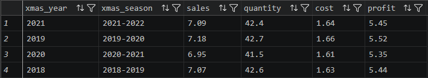
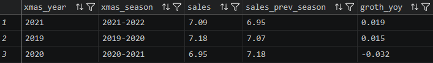
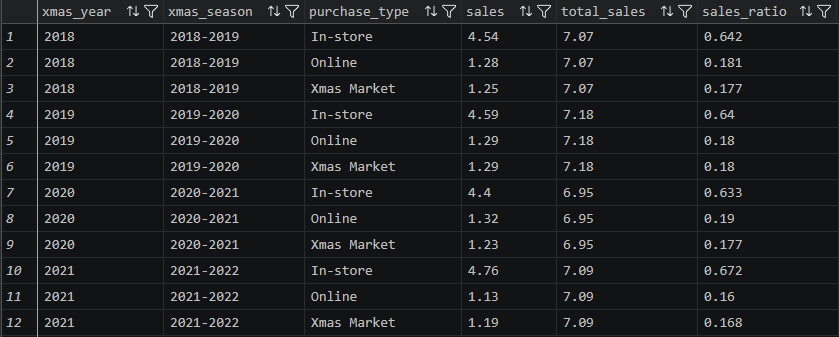
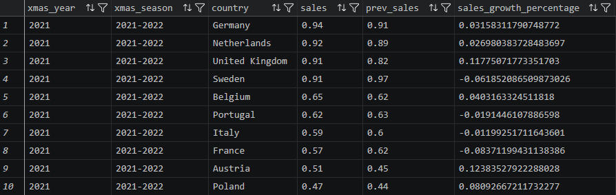

SQL Queries & Analysis Results
Each analysis presents the business
objective, SQL logic, query output,
and insights derived from the data.
Query numbering follows the original
project. Question 2 is excluded
because creating the required
database view was restricted.
Queries 3–10 reference the existing
dbo.v_xmas_sales view.
SQL Query 01
Seasonal Revenue, Cost & Profit
Objective
Calculate revenue, units sold,
costs, and profit for each
complete Christmas season
to evaluate overall business
performance.
SQL Implementation
Used a CTE to assign each
transaction to its Christmas
season, excluding the incomplete
2017–2018 period.
Applied SUM, GROUP BY,
CASE WHEN, EOMONTH,
and ROUND to aggregate
seasonal results.
;WITH xmas_sales AS (
SELECT
CASE
WHEN MONTH([date]) = 1
THEN YEAR([date]) - 1
ELSE YEAR([date])
END AS xmas_year,
CASE
WHEN MONTH([date]) = 1
THEN CONCAT(
YEAR([date]) - 1,
'-',
YEAR([date])
)
ELSE CONCAT(
YEAR([date]),
'-',
YEAR([date]) + 1
)
END AS xmas_season,
s.*
FROM dbo.xmas_sales s
WHERE EOMONTH([date]) <> '2018-01-31'
),
seasonal_sales AS (
SELECT
xmas_year,
xmas_season,
SUM(total_sales) AS sales,
SUM(quantity) AS quantity,
SUM(cost) AS cost,
SUM(profit) AS profit
FROM xmas_sales
GROUP BY
xmas_year,
xmas_season
)
SELECT
xmas_year,
xmas_season,
ROUND(sales / POWER(10.0, 6), 2)
AS sales,
ROUND(quantity / POWER(10.0, 3), 1)
AS quantity,
ROUND(cost / POWER(10.0, 6), 2)
AS cost,
ROUND(profit / POWER(10.0, 6), 2)
AS profit
FROM seasonal_sales
ORDER BY xmas_year;

Figure 1. Seasonal revenue,
quantity, cost and profit.
Financial values in USD millions.
Key Findings
-
2021–2022:
$7.09M revenue,
$1.64M cost,
and $5.45M profit.
-
2019–2020:
Highest seasonal revenue
at $7.18M.
-
2020–2021:
Lowest revenue among
the four complete seasons
at $6.95M.
-
Profitability remained
around 77% of revenue
across the analyzed seasons.
SQL Query 03
Year-over-Year Revenue Growth
Objective
Compare each Christmas season
with the previous season to
measure revenue growth
or decline.
SQL Implementation
Used a CTE to aggregate sales
by year and a self-JOIN
to match each season
with its preceding season.
Calculated growth as the
percentage change in revenue.
;WITH s AS (
SELECT
xmas_year,
xmas_season,
SUM(total_sales) AS sales
FROM dbo.v_xmas_sales
GROUP BY
xmas_year,
xmas_season
)
SELECT
s.xmas_year,
s.xmas_season,
ROUND(s.sales / POWER(10.0, 6), 2)
AS sales,
ROUND(prev.sales / POWER(10.0, 6), 2)
AS sales_prev_season,
ROUND(
(s.sales - prev.sales) /
NULLIF(prev.sales, 0),
3
) AS growth_yoy
FROM s
JOIN s prev
ON s.xmas_year = prev.xmas_year + 1
ORDER BY s.xmas_year;

Figure 2. Year-over-year
Christmas season revenue growth.
Key Findings
-
2019–2020:
Revenue increased
approximately 1.5%.
-
2020–2021:
Revenue declined
approximately 3.2%.
-
2021–2022:
Revenue recovered
approximately 1.9%.
-
Sales recovered in the
most recent season,
but remained slightly below
the 2019–2020 peak.
SQL Query 04
Sales Channel Performance
Objective
Determine revenue contribution
from In-store, Online,
and Christmas Market channels
for each Christmas season.
SQL Implementation
Created two CTEs:
one for total seasonal revenue
and another for revenue
by purchase channel.
Joined the results to calculate
each channel's seasonal
revenue contribution.
;WITH xmas_season_sales AS (
SELECT
xmas_year,
xmas_season,
SUM(total_sales) AS sales
FROM dbo.v_xmas_sales
GROUP BY
xmas_year,
xmas_season
),
s AS (
SELECT
xmas_year,
purchase_type,
SUM(total_sales) AS sales
FROM dbo.v_xmas_sales
GROUP BY
xmas_year,
purchase_type
)
SELECT
x.xmas_year,
x.xmas_season,
s.purchase_type,
ROUND(s.sales / POWER(10.0, 6), 2)
AS sales,
ROUND(x.sales / POWER(10.0, 6), 2)
AS total_sales,
ROUND(
s.sales / NULLIF(x.sales, 0),
3
) AS sales_ratio
FROM s
JOIN xmas_season_sales x
ON s.xmas_year = x.xmas_year
ORDER BY
x.xmas_year,
s.purchase_type;

Figure 3. Channel revenue
and seasonal market share.
Key Findings
-
In-store sales contributed
approximately 63–67%
of seasonal revenue.
-
In 2021–2022,
In-store revenue reached
$4.76M, or 67.2%.
-
Online revenue accounted
for approximately 16–19%
across seasons.
-
Christmas Market sales
represented approximately
17–18%.
Recommendation:
Prioritize store operations
while evaluating opportunities
to expand online sales
and diversify revenue channels.
SQL Query 05
Geographic Revenue Analysis
Objective
Identify the highest-revenue
countries and cities
across the analyzed dataset.
SQL Implementation
Used GROUP BY and SUM
to aggregate sales
at country and city levels.
Sorted the results
to identify major markets.
-- Revenue by country
SELECT
country,
ROUND(
SUM(total_sales) / POWER(10.0, 6),
2
) AS sales
FROM dbo.v_xmas_sales
GROUP BY country
ORDER BY sales DESC;
-- Revenue by city
SELECT
country,
city,
ROUND(
SUM(total_sales) / POWER(10.0, 6),
2
) AS sales
FROM dbo.v_xmas_sales
GROUP BY
country,
city
ORDER BY
country,
sales DESC;
Key Findings
-
Sweden generated $3.78M,
the highest cumulative
country revenue.
-
Netherlands followed
closely at $3.77M.
-
Germany generated $3.70M,
and the United Kingdom
generated $3.63M.
-
Within Germany,
Munich and Berlin
each generated about
$0.96M.
Recommendation:
Use market-level revenue
comparisons to guide
geographic planning
and market prioritization.
SQL Query 06
Country-Level Revenue Growth
Objective
Compare revenue growth
across countries in the
latest Christmas season
to identify expanding
and declining markets.
SQL Implementation
Aggregated sales by season
and country using a CTE.
Used a self-JOIN
to compare the latest season
with the previous year
for the same country.
;WITH s AS (
SELECT
xmas_year,
xmas_season,
country,
SUM(total_sales) AS sales
FROM dbo.v_xmas_sales
GROUP BY
xmas_year,
xmas_season,
country
)
SELECT
s.xmas_year,
s.xmas_season,
s.country,
ROUND(
s.sales / POWER(10.0, 6),
2
) AS sales,
ROUND(
prev.sales / POWER(10.0, 6),
2
) AS prev_sales,
(s.sales - prev.sales) /
NULLIF(prev.sales, 0)
AS sales_growth_percentage
FROM s
LEFT JOIN s prev
ON s.xmas_year = prev.xmas_year + 1
AND s.country = prev.country
WHERE s.xmas_year = (
SELECT MAX(xmas_year)
FROM dbo.v_xmas_sales
)
ORDER BY s.sales DESC;

Figure 5. Latest season
revenue by country
and year-over-year growth.
Key Findings
-
Germany led the latest
season with approximately
$0.94M revenue.
-
Austria recorded
approximately 12.38%
revenue growth.
-
United Kingdom revenue
increased about 11.75%.
-
Poland increased about 8.09%.
-
France declined 8.37%,
while Sweden declined 6.18%.
Recommendation:
Investigate revenue weakness
in declining markets
while reviewing the drivers
of growth in Austria
and the United Kingdom.
SQL Query 07
Customer & Channel Segmentation
Objective
Evaluate revenue distribution
by customer age group,
gender, and purchase channel
to understand the composition
of holiday sales.
SQL Implementation
Used SUM and GROUP BY
to calculate total revenue
for each customer segment.
Divided segment revenue
by overall revenue
to determine its contribution.
-- Revenue by age group
SELECT
customer_age_tange,
SUM(total_sales) AS sales,
SUM(total_sales) * 1.0 /
NULLIF(
(SELECT SUM(total_sales)
FROM dbo.v_xmas_sales),
0
) AS sales_proportion
FROM dbo.v_xmas_sales
GROUP BY customer_age_tange;
-- Revenue by gender
SELECT
gender,
SUM(total_sales) AS sales,
SUM(total_sales) * 1.0 /
NULLIF(
(SELECT SUM(total_sales)
FROM dbo.v_xmas_sales),
0
) AS sales_proportion
FROM dbo.v_xmas_sales
GROUP BY gender
ORDER BY gender;
-- Revenue by purchase channel
SELECT
purchase_type,
SUM(total_sales) AS sales,
ROUND(
SUM(total_sales) * 1.0 /
NULLIF(
(SELECT SUM(total_sales)
FROM dbo.v_xmas_sales),
0
),
3
) AS sales_proportion
FROM dbo.v_xmas_sales
GROUP BY purchase_type
ORDER BY purchase_type;
Key Findings
-
Ages 1–11 accounted for
approximately 38.85%
of total revenue.
-
Ages 12–17 generated
approximately 30.85%.
-
Ages 18+ contributed
approximately 30.30%.
-
Female customers contributed
50.57% of revenue,
versus 49.43% for males.
-
In-store represented 64.7%
of total revenue,
compared with Online at 17.8%
and Christmas Market at 17.5%.
SQL Query 08
Purchasing & Payment Behavior by Age
Objective
Identify how purchase channels
and payment methods differ
between customer age groups.
SQL Implementation
Used CTEs to calculate
total revenue by age group
and revenue by age group
combined with each
purchase or payment method.
Joined these results
to calculate within-group
proportions.
-- Purchase channel by age group
;WITH t AS (
SELECT
customer_age_tange,
SUM(total_sales) AS sales
FROM dbo.v_xmas_sales
GROUP BY customer_age_tange
),
s AS (
SELECT
customer_age_tange,
purchase_type,
SUM(total_sales) AS sales
FROM dbo.v_xmas_sales
GROUP BY
customer_age_tange,
purchase_type
)
SELECT
s.customer_age_tange,
s.purchase_type,
ROUND(s.sales / POWER(10.0, 6), 2)
AS sales,
ROUND(t.sales / POWER(10.0, 6), 2)
AS total_sales,
ROUND(
s.sales / NULLIF(t.sales, 0),
3
) AS sales_proportion
FROM s
LEFT JOIN t
ON s.customer_age_tange = t.customer_age_tange
ORDER BY
s.customer_age_tange,
s.purchase_type;
-- Payment method by age group
;WITH t AS (
SELECT
customer_age_tange,
SUM(total_sales) AS sales
FROM dbo.v_xmas_sales
GROUP BY customer_age_tange
),
s AS (
SELECT
customer_age_tange,
payment_method,
SUM(total_sales) AS sales
FROM dbo.v_xmas_sales
GROUP BY
customer_age_tange,
payment_method
)
SELECT
s.customer_age_tange,
s.payment_method,
ROUND(s.sales / POWER(10.0, 6), 2)
AS sales,
ROUND(t.sales / POWER(10.0, 6), 2)
AS total_sales,
ROUND(
s.sales / NULLIF(t.sales, 0),
3
) AS sales_proportion
FROM s
LEFT JOIN t
ON s.customer_age_tange = t.customer_age_tange
ORDER BY
s.customer_age_tange,
s.payment_method;
Key Findings
-
Ages 1–11 generated 74.4%
of their revenue
through In-store purchases.
-
Ages 12–17 generated
58.7% through In-store.
-
Ages 18+ generated
58.3% through In-store.
-
Within ages 1–11,
Cash accounted for 86.2%
of group revenue.
-
For ages 18+,
Credit Card represented 32.1%,
followed by PayPal at 23.1%.
Recommendation:
Maintain strong in-store
checkout capabilities while
supporting multiple digital
payment methods for older
customer groups.
SQL Query 09
Product Category Performance
Objective
Evaluate revenue contribution,
average product prices,
and profitability
across product categories.
SQL Implementation
Used GROUP BY and aggregation
functions to calculate category
revenue, units sold,
average prices, and
profit-to-revenue ratios.
Extended the analysis
to individual products
within each category.
-- Product category analysis
;WITH s AS (
SELECT
product_category,
SUM(total_sales) AS sales,
AVG(unit_price) AS avg_unit_price,
SUM(profit) AS profit,
SUM(profit) /
NULLIF(SUM(total_sales), 0)
AS profit_ratio
FROM dbo.v_xmas_sales
GROUP BY product_category
)
SELECT
product_category,
ROUND(sales / POWER(10.0, 6), 2)
AS sales,
ROUND(
sales /
NULLIF(
(SELECT SUM(total_sales)
FROM dbo.v_xmas_sales),
0
),
3
) AS sales_proportion,
ROUND(avg_unit_price, 2)
AS avg_unit_price,
ROUND(profit_ratio, 4)
AS profit_ratio
FROM s
ORDER BY product_category;
-- Product-level analysis
;WITH s AS (
SELECT
product_category,
product_name,
SUM(total_sales) AS sales,
SUM(quantity) AS quantity,
MIN(unit_price) AS min_unit_price,
MAX(unit_price) AS max_unit_price,
AVG(unit_price) AS avg_unit_price,
SUM(profit) /
NULLIF(SUM(total_sales), 0)
AS profit_ratio
FROM dbo.v_xmas_sales
GROUP BY
product_category,
product_name
)
SELECT
product_category,
product_name,
ROUND(sales / POWER(10.0, 6), 2)
AS sales,
quantity,
ROUND(min_unit_price, 2) AS min_unit_price,
ROUND(max_unit_price, 2) AS max_unit_price,
ROUND(avg_unit_price, 2) AS avg_unit_price,
ROUND(profit_ratio, 4) AS profit_ratio
FROM s
ORDER BY
product_category,
product_name;
Key Findings
-
Toys generated approximately
$4.46M, representing
15.8% of total revenue.
-
Clothing generated $3.22M,
or 11.4%.
-
Accessories generated $2.81M,
approximately 9.9%.
-
Books contributed $2.66M,
or 9.4%.
-
Category-level profit ratios
were relatively consistent,
generally around 76.8–77.0%.
Recommendation:
Prioritize inventory planning
for high-revenue product
categories while evaluating
category-level demand
and profitability.
SQL Query 10
Customer Shopping Time Patterns
Objective
Identify the days and hours
with the highest transaction
activity to support
staffing and operational planning.
SQL Implementation
Used DATEPART-derived weekday
and hour fields with COUNT(*)
and GROUP BY to analyze
shopping activity patterns.
-- Activity by gender and weekday
SELECT
gender,
weekday,
weekday_name,
COUNT(*) AS nb_orders
FROM dbo.v_xmas_sales
GROUP BY
gender,
weekday,
weekday_name
ORDER BY
gender,
weekday;
-- Activity by hour
SELECT
[hour],
COUNT(*) AS nb_orders
FROM dbo.v_xmas_sales
GROUP BY [hour]
ORDER BY [hour];
Key Findings
-
3 PM:
Highest observed activity
with 3,131 rows.
-
6 PM:
3,105 rows,
another busy period.
-
11 AM:
3,070 rows.
-
Female Saturday activity:
2,894 rows;
female Monday activity:
2,917 rows.
-
Activity is generally
concentrated during
daytime and early evening.
Recommendation:
Consider higher staffing
and checkout capacity
during busy shopping hours,
particularly the afternoon.